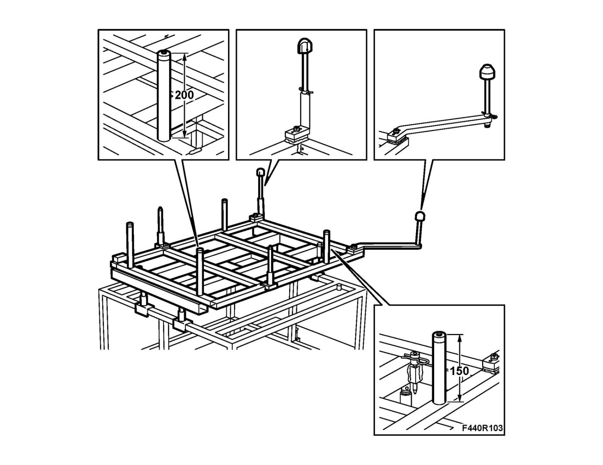
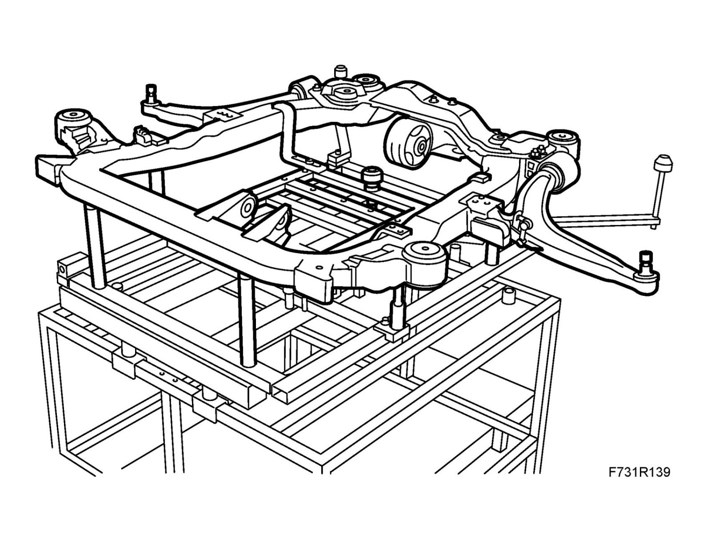
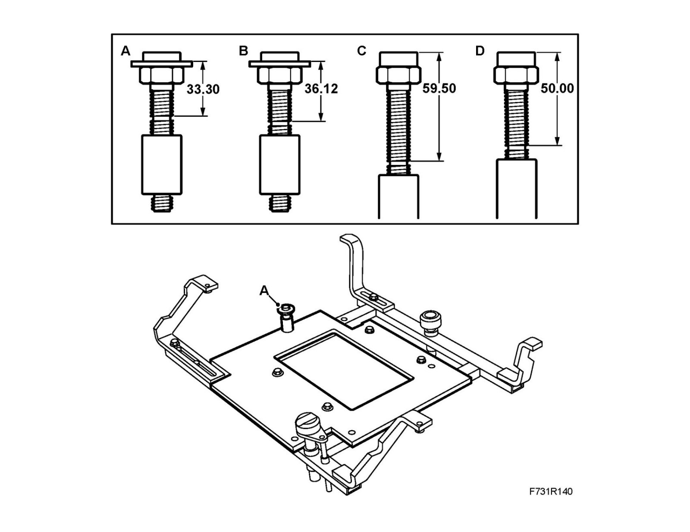
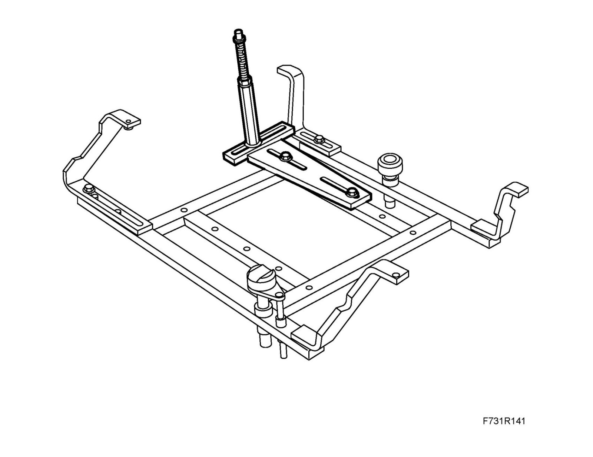
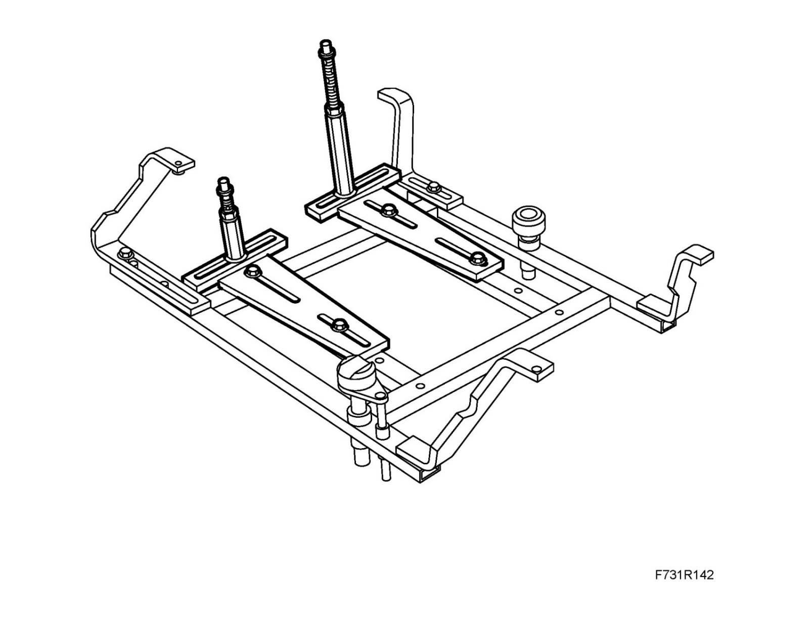
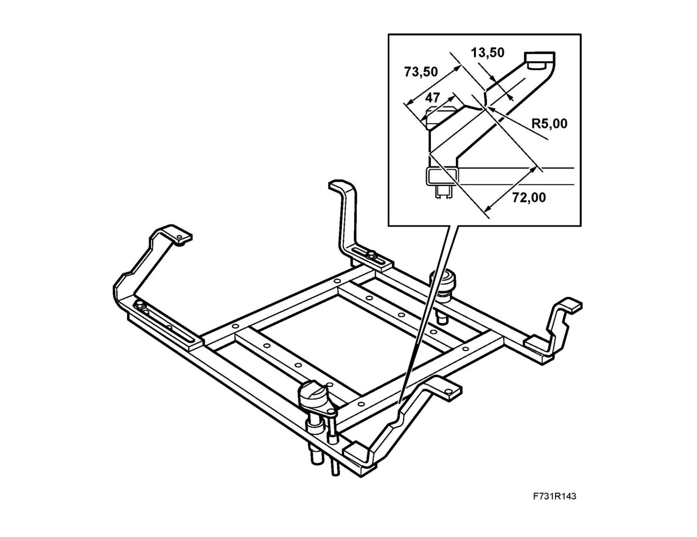
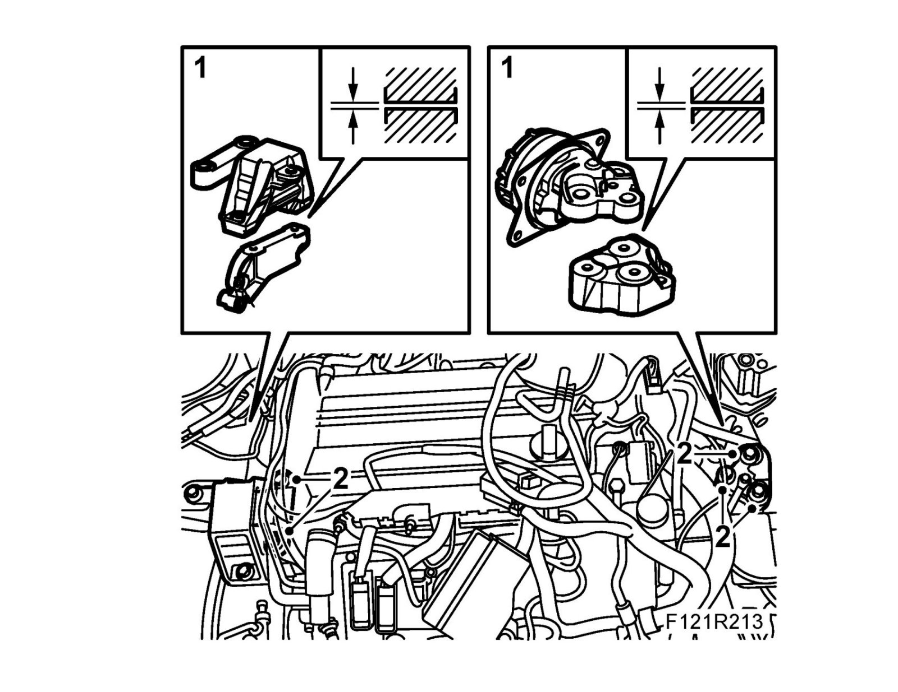

Centering Tool, Engine and Subframe
Centering tool, engine and subframeFitting, removal/fitting tool, subframe
1. Fit the tool on the trolley lift as illustrated. Pay attention to the positioning of the column and the locating pins.

2. Position the tool under the car's subframe as illustrated.

Fitting centering tool, subframe - engine
1. Petrol B207 and B284: Install 83 96 152 Kit, centering tool engine on 83 96 145 Centering tool, subframe - engine with 83 96 368 Supplement kit for centering fixture. Pay attention to bolt location. The distance from the washer to the slot in the threads is different on the two short sleeves. Fit only sleeve A as illustrated. Use Thread locking adhesive, Loctite 270 on the sleeve.
B284: Use 32 025 059 Support.

Petrol 1.8 XE: Use 83 96 145 Centering tool, subframe - engine with support from 83 96 368 Supplement kit for centering fixture.

Diesel: Fit 32 025 007 Installation fixture on 83 96 145 Centering tool, subframe - engine with support from 83 96 368 Supplement kit for centering fixture.

CV: In order to fit 83 96 145 Centering tool, subframe - engine to the subframe, a recess must be made in one of the fixture "legs" as illustrated below.

Adjusting (after subframe is fitted to body)
1. Fine-tune the position of the power train using the adjuster screws. The left and right engine brackets should make the same amount of contact with each engine pad.
Important
Engine mountings should not lie against the engine brackets.

2. Tighten the bolts to the prescribed torque.